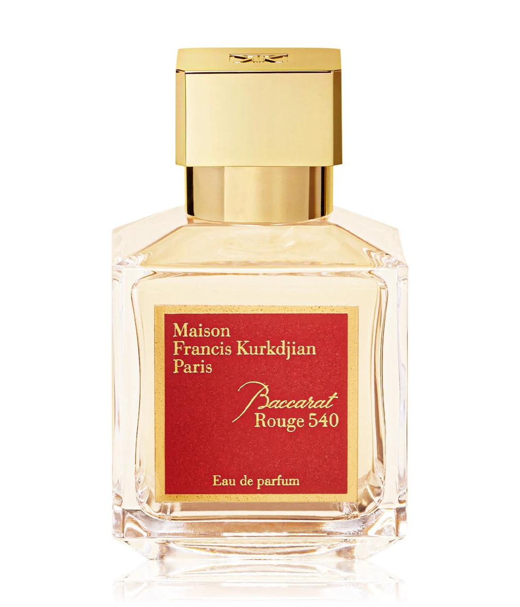

La perfumería nicho es el territorio donde reina la libertad creativa sobre las tendencias del marketing. Aquí, el perfumista es un artista que no busca complacer a las masas, sino crear obras únicas utilizando las materias primas más selectas y exclusivas del mundo. Son fragancias con alma, a menudo unisex, diseñadas para evolucionar en la piel y contar una historia. Alejada de la producción masiva, la perfumería nicho ofrece el verdadero lujo: la distinción de llevar un aroma complejo, audaz e imposible de encontrar en cualquier esquina.

Parfums de Marly–Layton

Creed Aventus

Santal 33

Baccarat Rouge 540

Xerjoff–Naxos

Oud for Greatness

By Kilian–Angels' Share

Tom Ford–Oud Wood